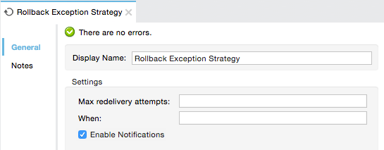
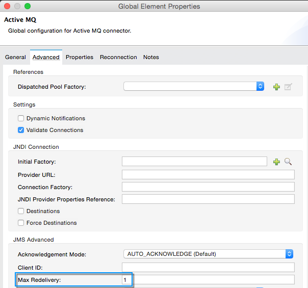
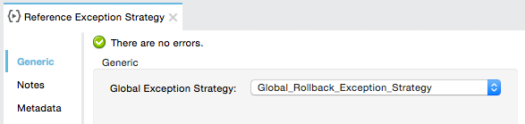

Rollback Exception Strategy
You can define a rollback exception strategy to ensure that a message that throws an exception in a flow is rolled back for reprocessing. Use a rollback exception strategy when you cannot correct an error that occurs in a flow. Usually, you use a rollback exception strategy to handle errors that occur in a flow that involve a transaction. If the transaction fails, that is, if a message throws an exception while being processed, then the rollback exception strategy rolls back the transaction in the flow. If the inbound connector is transactional, Mule delivers the message to the inbound connector of the parent flow again to reattempt processing (that is, message redelivery).
Beyond managing transactional errors, you can use a rollback exception strategy to:
-
Manage unhandled exceptions—exceptions that the application fails to catch.
-
Put in flows in which messages require redelivery.
A rollback exception strategy has the potential to introduce an infinite loop of activity within a flow: a message throws an error, the rollback exception strategy catches the exception and rolls the message back for reprocessing; the message throws an error again, the rollback exception strategy catches the exception again, and rolls the message back for reprocessing, and so on.
To avoid this infinite loop and responsibly manage unresolvable errors, you can apply two limitations to a rollback exception strategy:
-
Define the maximum number of times that the rollback exception strategy attempts to redeliver the message for processing.
-
Define a flow to handle messages that exceed the maximum number of redelivery attempts.
Use Rollback Exception Strategy for Transactions
Unlike a catch exception strategy which always commits a failed transaction and consumes the message, a rollback exception strategy provides multiple attempts for a message to successfully move through a flow before committing a failed transaction and consuming the message.
For example, suppose you have a flow that involves a bank transaction to deposit funds in an account. You configure a rollback exception strategy to handle errors that occur in this flow; when an error occurs during processing — say, a flow-external bank account database is temporarily unavailable — the message throws an exception. The rollback exception strategy catches the exception, and rolls the message back to the beginning of the flow to reattempt processing. During the second attempt at processing, the database is back online again, and the message successfully reaches the end of the flow.
Mule attempts message redelivery when your flow uses one of the following two types of transports: transactional or reliable.
-
A transactional transport consumes a message as it travels through the flow, transforming it to a different object, for example, or enriching it with more data. When a message using a transactional transport throws an exception, a rollback exception strategy rolls back the transaction so the transport can return a message to its original state for reprocessing.
-
A reliable transport does not consume a message as it travels through the flow until it can ascertain that the message has successfully reached the end of the flow. When a message using a reliable transport throws an exception, the rollback exception strategy discards the partially processed message and instructs the flow to attempt processing the original message again.
Important: If your flow involves a reliable transport and a rollback exception strategy, you must set the flow’s Processing Strategy to "synchronous". (Configure the Processing Strategy in the Flow Properties panel.) This is because reliable transports do not consume messages, they wait for messages to successfully complete a flow before consuming the messages; therefore, the flow must process synchronously.
If you deploy a Mule application that contains a flow with an asynchronous processing strategy and a rollback exception strategy configured for message redelivery, the application fails!
| Transport | When an exception occurs… |
|---|---|
VM |
(Transactional Type) The message rolls back to its original state for reprocessing. |
JDBC |
(Transactional Type) The message rolls back to its original state for reprocessing. |
JMS |
(Transactional Type) The message rolls back to its original state for reprocessing. |
JMS |
(Reliable Type) The session recovers, that is, Mule discards the copy of the source file and attempts reprocessing the message using a fresh copy. |
FTP |
(Reliable Type) Mule discards the copy of the source file and attempts reprocessing the message using a fresh copy. |
File |
(Reliable Type) Mule discards the copy of the source file and attempts reprocessing the message using a fresh copy. |
IMAP |
(Reliable Type) Mule does not move the message from the mailbox and attempts reprocessing the message using a fresh copy of the original. |
Note: A JMS redelivery configuration takes precedence over the rollback exception strategy.
Use Rollback Exception Strategy for Unhandled Exceptions
At times, message processors in a flow encounter exceptions that they are unable to resolve by performing corrective measures; these types of errors are called "unhandled exceptions." Typically, all unhandled exceptions are handled by Mule’s default exception strategy, but you can customize a rollback exception strategy to more efficiently route messages with unhandled exceptions.
Depending on the flow exchange pattern, a rollback exception strategy routes messages with unhandled exceptions in one of two ways:
-
When the flow exchange pattern is one-way, the rollback exception strategy instructs the inbound connector transport to execute corrective actions.
-
When the flow exchange pattern is request-response, rollback exception strategy changes the payload of a message and returns it to the client.
Rollback Exception Strategy vs. Default Exception Strategy
Where once you would have used Mule’s default exception strategy to process unhanded exceptions, you can now configure the much improved rollback exception strategy to do so. To demonstrate the advantages rollback exceptions strategy has to offer, it is worthwhile noting some key differences in the methods each strategy employs when routing messages with unhandled exceptions.
Rollback Exception Strategy
-
Retains the information in the message payload at the time the exception was thrown; does not alter the message payload.
-
Stores the exception information in the exceptionPayload.
-
Returns the message processing result during execution of the exception strategy.
-
Records exception information in the exceptionPayload attribute; able to customize.
Where the default exception strategy falters, the rollback exception strategy performs. Using a rollback exception strategy, you can send messages with unhandled exceptions to a dead letter queue, send failure notifications, and change the result of a flow’s execution.
Configuring a Rollback Exception Strategy Using Studio Visual Editor
Whether your flow involves transactional or reliable transports, you can configure its rollback exception strategy in Mule.
-
Search for and drag and drop the Rollback Exception Strategy icon to put into the footer bar of a flow.
-
Open the Rollback Exception Strategy’s Properties Editor, then configure the attributes according to the table below.
Field Value Display Name
(Required) A unique name for the rollback exception strategy in your application.
Max redelivery attempts
(Required) Enter an integer to define the number of times you want the rollback exception strategy to roll back a message for reprocessing. If you set the default value to
0, the rollback exception strategy does _*not* _attempt to redeliver the message and throws aMessageRedeliveredExceptionupon the first processing failure.Notes:
-
If you enter nothing in the Max redelivery attempts field (leave the field blank), the rollback exception strategy redelivers the message over and over again, creating an infinite loop. Refer to Configuring Redelivery Attempts in JMS Global Connector below to learn more about setting this value to
0. -
All rollback exception strategies in a catch exception strategy should have the same Max Redelivery Attempts setting, otherwise the value of the first one with an explicit setting (not empty) is used.
When
Enter an expression to indicate the kind of exception the rollback exception should handle.
Conditions for this field:
-
Expression not defined: All messages in this flow that throw exceptions are handled by this rollback exception strategy.
-
Expression defined: When Mule evaluates the expression against the message being processed and returns
true, Mule executes the exception strategy. For example, if you enter the following, only those messages which throw anorg.mule.example.AlreadyProcessedExceptionexception are handled by this exception strategy:
#[exception.causedBy(org.mule.example.AlreadyProcessedException)]
Mule’s default exception strategy implicitly handles all exceptions which do not match the expression you have defined in the When field.
Enable Notifications
Checked (default). When checked, instructs Mule to send an exception notification to a registered listener — for example, the Mule Management Console — whenever a message throws an exception in this flow.
Log Exceptions
Checked (default). When checked, instructs Mule to log the exceptions.
Here are examples of expressions that you can enter in the When field:
#[exception.causedBy(org.mule.example.ExceptionType)] #[exception.causedExactlyBy(org.mule.example.ExceptionType)] #[exception.causeMatches(org.mule.example.*)] #[exception.causeMatches(*) && + !exception.causedBy(java.lang.ArithmeticException) && + !exception.causedBy(org.mule.api.registry.ResolverException)] -
-
Drag building blocks from the palette into the Rollback Exception Strategy box to build a flow that processes messages that throw exceptions in the parent flow. A rollback exception strategy can contain any number of message processors.
If your flow uses a reliable transport, you can stop at this point and not configure a redelivery exhausted sub flow. If you choose not to configure a redelivery exhausted sub flow:
-
A message that exceeds its redelivery attempts (called "a poisoned message") throws a MessageRedeliveredException.
-
The exception strategy commits the transaction.
-
The exception strategy consumes the message.
-
-
Drag building blocks from the palette into the redelivery exhausted box to build a flow that processes messages which exceed the maximum number of redelivery attempts. For example, you may wish to use redelivery exhausted to direct all “poisoned messages” to a dead letter queue. A redelivery exhausted flow can contain any number of message processors.
Note: You can define only one exception strategy for each flow. If you need to design a more complex error handling strategy that involves more than one way of handling exceptions, consider using a Choice Exception Strategy.
Configuring a Rollback Exception Strategy Using XML Editor or Standalone
-
In your flow, below all the message processors, add a
rollback-exception-strategyelement. Refer to code below. -
Configure attributes of the exception strategy according to the table below.
Attribute Value doc:name
(Required) A unique name for the rollback exception strategy in your application.
Not required in Standalone.maxRedeliveryAttempts
(Required) Use an integer to define the number of times you want the rollback exception strategy to rollback a message for reprocessing. If you set the default value to
0, which means the rollback exception strategy does not attempt to redeliver the message and throws a MessageRedeliveredException upon the first processing failure. Refer to Configuring Redelivery Attempts in JMS Global Connector below to learn more about setting this value to0.Note: All rollback exception strategies in a catch exception strategy should have the same maxRedeliveryAttempts setting, otherwise the value of the first one with an explicit setting (not empty) is used. Also, the table instructs to set Max Redelivery to 0 and Max Redelivery in JMS to -1 for infinite loop, but the actual result is that the message is not redelivered.
when
Define an expression to indicate the kind of exception the rollback exception should handle.
Conditions for this field:
-
Expression not defined: All messages in this flow that throw exceptions is handled by this rollback exception strategy.
-
Expression defined: When Mule evaluates the expression against the message being processed and returns true, Mule executes the exception strategy.
For example, if you enter the following, only those messages which throw an
org.mule.example.AlreadyProcessedExceptionexception are handled by this exception strategy:#[exception.causedBy(org.mule.example.AlreadyProcessedException)], Mule’s default exception strategy implicitly handles all exceptions which do not match the expression you have defined in the when attribute.enableNotifications
Checked (default). When checked, instructs Mule to send an exception notification to a registered listener — for example, the Mule Management Console — whenever a message throws an exception in this flow.
logExceptions
Checked (default). When checked, instructs Mule to log the exceptions.
<rollback-exception-strategy maxRedeliveryAttempts="0" doc:name="My Rollback Exception Strategy" when="exception.causedBy(org.mule.example.ExceptionType)" enableNotifications="true"/>The following are examples of expressions that you can enter in the When field:
#[exception.causedBy(org.mule.example.ExceptionType)] #[exception.causedExactlyBy(org.mule.example.ExceptionType)] #[exception.causeMatches(org.mule.example.*)] #[exception.causeMatches(*) && + !exception.causedBy(java.lang.ArithmeticException) && + !exception.causedBy(org.mule.api.registry.ResolverException)] -
-
Add child elements to your
rollback-exception-strategyto build a flow that processes messages that throw exceptions in the parent flow. A rollback exception strategy can contain any number of message processors.Note: If your flow uses a reliable transport, you can stop at this point and not configure a redelivery exhausted sub flow. If you choose not to configure a redelivery exhausted sub flow:
-
A message that exceeds its redelivery attempts (a.k.a. “a poisoned message”) throws a
MessageRedeliveredException. -
The exception strategy commits the transaction.
-
The exception strategy consumes the message.
-
-
Add an
on-redelivery-attempts-exceededchild element to yourrollback-exception-strategyelement at the bottom, below all the message processors included in the exception strategy. -
Add child elements to your
on-redelivery-attempts-exceededchild element to build a flow that processes messages which exceed the maximum number of redelivery attempts. For example, you may wish to use redelivery exhausted to direct all “poisoned messages” to a dead letter queue. A redelivery exhausted flow can contain any number of message processors.
Note: You can define only one exception strategy for each flow. If you need to design a more complex error handling strategy that involves more than one way of handling exceptions, consider using a Choice Exception Strategy.
Configuring Redelivery Attempts in the JMS Global Connector
Mule creates a digest of a message’s payload in order to generate a redelivery attempt ID. Mule uses this unique ID as part of its redelivery policy which keeps track of the number of message redelivery attempts. (To generate a digest, Mule applies a hash function to the message to obtain a fixed-size bit string that is unique to the message.)
You can use a JMS global connector’s redelivery policy to improve the performance of a flow that processes very large or streaming message payloads. Rather than generating a unique ID from a message’s (potentially large or streaming) payload, a JMS global connector uses its JMSRedelivery property to keep track of message redelivery attempts.
If your flow uses a JMS global connector, you can configure it to manage the redelivery policy by defining its Max Redelivery.
Configuring Redelivery Attempts Studio Visual Editor
-
Search for "jms" and drag the JMS connector to the Canvas.
-
Click the green plus sign to the right of the Connector Configuration field.
-
In the Choose Global Type field, expand the JMS entry, click JMS, and click OK.
-
Click the Advanced tab. Scroll down to the JMS Advanced section of the menu.
-
Enter an integer in the Max Redelivery field to define the number of times you want the rollback exception strategy to rollback a message for reprocessing, and click OK to save your changes. Note that the default value of this field is set to
-1; this ensures that the JMS global connector’s redelivery policy defers to your rollback exception strategy’s redelivery policy by default. -
Click the Message Flow tab, then double-click title bar of your rollback exception strategy.
-
In the Rollback Exception Strategy Properties panel that appears, enter a
0in the Max redelivery attempts field and click OK to save your changes. -
Refer to the table below to learn more about entering a value in the maxRedelivery fields.
Configuring Redelivery Attempts XML Editor or Standalone
-
To your global
jms:connectorelement set above all the flows in your Mule project, add amaxRedeliveryattribute and set the value to an integer to define the number of times you want the rollback exception strategy to rollback a message for reprocessing (see the code below). Note that if you set the value of the attribute to-1, the JMS global connector’s redelivery policy defers to your rollback exception strategy’s redelivery policy by default.<jms:connector name="JMS" validateConnections="true" maxRedelivery="1" doc:name="JMS"/> -
To the
rollback-exception-strategyelement in your flow, set the value of themaxRedeliveryAttemptsattribute to0. Setting to0instructs Mule to use the value ofmaxRedeliveryin the global JMS connector’s configuration.Note: All rollback exception strategies in a catch exception strategy should have the same maxRedeliveryAttempts setting, otherwise the value of the first one with an explicit setting (not empty) is used.
-
Refer to the table below to learn more about the setting the value of the
maxDeliveryattributes.
Note: If your flow uses a JMS global connector and you do not want the connector to manage your rollback strategy’s redelivery policy, then be sure to set the connector’s max redelivery value to -1. This ensures that the JMS global connector’s redelivery policy defers to your rollback exception strategy’s redelivery policy by default.
| Rollback Exception Strategy configured in flow? | Results If |
|---|---|
|
If Max Redelivery Set in Rollback ES in the flow = Then: Rollback exception strategy redelivers the message to parent flow 3 times. After 3 failures, message throws a |
|
If Max Redelivery Set in Rollback ES in the flow = Then: Rollback exception strategy redelivers the message to parent flow 3 times. After 3 failures, message throws a |
|
If Max Redelivery Set in Rollback ES in the flow = Then: Rollback exception strategy causes the message to not be redelivered. |
|
If Max Redelivery Set in Rollback ES in the flow = Then: Rollback exception strategy causes the message to not be redelivered. |
|
If Max Redelivery Set in Rollback ES in the flow = Then: Rollback exception strategy redelivers the message to parent flow 4 times, as per the JMS global connector redelivery policy. After 4 failures, the message throws a |
Creating a Global Rollback Exception Strategy in Visual Editor
You can create one or more global exception strategies to reuse in flows throughout your entire Mule application. First, create a Mule Configuration File and add to it your global rollback exception strategy. Then add a Reference Exception Strategy to a flow to apply the error handling behavior of your new global rollback exception strategy.
-
From File > New > Mule Configuration File, create a global configuration file to contain your Rollack Exception Strategy.
-
Refer to step 2 Configuring a Rollback Exception Strategy to configure your global rollback exception strategy in your configuration file.
-
Click the Message Flow tab below the canvas and add building blocks to your configuration file.
-
Follow steps 3 - 5 Configuring a Rollback Exception Strategy to build your global rollback exception strategy flow in your configuration file and to set the redelivery exhausted flow.
Creating a Global Rollback Exception Strategy in XML Editor or Standalone
-
Create a Mule Configuration File as a text file that you add to your project. This file needs to have the same format as a Mule project file. In this file, add the XML elements that you want to share with the flows in your project.
-
Above all the flows in your application, create a
rollback-exception-strategyelement. -
To the
rollback-exception-strategyelement, add the attributes according to step 2 [Configuring a Rollback Exception Strategy]. -
Follow steps 3 - 5 [Configuring a Rollback Exception Strategy] to build your rollback exception strategy flow and the redelivery exhausted flow.
Applying a Global Rollback Exception Strategy to a Flow in Studio
Use a reference exception strategy to instruct a flow to employ the error handling behavior defined by your global rollback exception strategy in your Mule configuration file. In other words, you must ask your flow to refer to the global rollback exception strategy in the configuration file for instructions on how to handle errors.
-
From the Error Handling palette group, drag and drop the Reference Exception Strategy icon into the footer bar of a flow.
-
Open the Reference Exception Strategy’s Properties Editor.
 -
Use the drop-down to select your Global Exception Strategy.
-
Click anywhere in the canvas to save your changes.
Note: You can create a global rollback exception strategy (that is access the Choose Global Type panel) from the reference exception strategy’s pattern properties panel. Click the button next to the Global Exception Strategy drop-down and follow the steps above to create a global choice exception strategy.
Applying a Global Rollback Exception Strategy to a Flow in XML Editor or Standalone
-
In your flow, below all the message processors, add a
reference-exception-strategyelement. Refer to the code below. -
Configure attributes of the exception strategy according to the table below.
Attribute Value ref
(Required) The name of the global exception strategy to which your flow should refer to handle exceptions.
doc:name
(Required) A unique name for the rollback exception strategy in your application. Not required in Standalone.
<exception-strategy ref="Global_Rollback_Exception_Strategy" doc:name="Reference Exception Strategy"/>
Note: You can append a Reference Exception Strategy to any number of flows in your Mule application and instruct them to refer to any of the global catch, rollback or choice exception strategies you have created. You can direct any number of reference exception strategies to refer to the same global exception strategy.
See Also
-
Learn how to configure catch exception strategies.
-
Learn how to configure choice exception strategies.